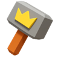

EVENT CYCLE,
DEMYSTIFIED
BETA
One 28-day wheel for the recurring events — day 1 is always a Monday. Set it to your kingdom's day: what's on today, what to save, what to copy into KingShot.
every 28 days day 1 is a monday prep · governor · light weeks copy for KingShot
Today
the 28-day clock
set the clock and the card fills itself in.
The 28-day clock
Four weeks, one loop. After your kingdom's first Kingdom of Power they repeat forever on a global 28-day cycle — every kingdom runs the same week, and day 1 is always a Monday. Which week you're in is the whole game.
The wheel is global: one date anchors it for every kingdom. New kingdoms join the wheel once they unlock Kingdom of Power, after their 5th Hall of Governors; before that, their events run on their own clock. The live clock above works today out from the UTC date, so every kingdom sees the same day.
The other clocks still run underneath: Bear Hunt every two days, Mystic Trial rooms on their weekdays, Arena daily. They're the income; the 28-day wheel is the spending — and what your kingdom does there becomes its permanent KvK record, the ledger that shapes how Transfer treats it. the hoard is the point: spend it only where the wheel scores it highest.
Alliance Brawl
The week-1 main event, right after KvK: your alliance against one from another kingdom for 6.5 days — five 24-hour themed days, then a ~36-hour finale. In eligible kingdoms it runs beside Merchant Empire, so the truck tasks count in both.
- Top-20 alliance. Your alliance must rank in the kingdom's top 20 by power.
- Join before matchmaking. Matchmaking locks at Sunday ~23:00 UTC, the night before the brawl opens — being in your alliance then qualifies you.
- The preview window. Saturday 00:00 to Sunday 22:59 UTC you can switch freely. After matchmaking, a new alliance earns you personal points only until you return.
- Another kingdom. Alliances match across kingdoms; each day the higher-scoring side takes it.
Days 1–5 run 24 hours each; the finale ~36 hours, Saturday into Sunday. Below: each day's tasks, points per action.
Day 1 · Rise of the City
the verdict: trucks, raids and gathering are free and score twice (Merchant Empire); the building rows eat truegold you'll want in prep, so spend them only up to a chest.
| Escort a truck (any grade) | 10,000 |
| Raid a truck (any grade) | 10,000 |
| Master Emblem | 3,600 |
| Truegold (building upgrade) | 1,250 |
| Truegold Dust (tech research) | 625 |
| Master's Manuscript | 36 |
| 1m construction / research / training / master speedup | 18 |
| Gather in the wilderness (bread / wood / stone / iron) | 2 |
Trucks are the Merchant Empire overlap — one escort scores in both. Master emblems pay 3,600 here; if you hold them for prep days 2–3, weigh it against today's rate.
Day 2 · Hero Development
the verdict: trucks and intel missions are the free score; shards cost a hoard Strongest Governor wants, so spend them only when today's chest needs it.
| Escort a truck (any grade) | 10,000 |
| Raid a truck (any grade) | 10,000 |
| Master Emblem | 3,600 |
| Finish an intel mission | 3,000 |
| Mythic hero shard | 1,875 |
| Truegold (building upgrade) | 1,250 |
| Epic hero shard | 750 |
| Truegold Dust (tech research) | 625 |
| Rare hero shard | 210 |
| Master's Manuscript | 36 |
| 1m construction / research / training / master speedup | 18 |
Shards ascend at better than half the KvK rate, so the fixed rewards can make this the month's cheapest shard spend — but every shard is one Strongest Governor week wants.
Day 3 · Pet Training
the verdict: pets and charms score, but taming marks pay less here than prep day 3 — spend only what today's chest needs, keep the rest for prep.
| Escort a truck (any grade) | 10,000 |
| Raid a truck (any grade) | 10,000 |
| Advanced Taming Mark (pet refinement) | 9,370 |
| Common Taming Mark (pet refinement) | 680 |
| Governor Charm max score +1 | 45 |
| Pet Advancement score +1 | 30 |
| Gather in the wilderness (bread / wood / stone / iron) | 2 |
Levelling a charm or pet also pays a one-time level-up score on top of the per-point rows — the amounts climb steeply with level. Pets here pay less per taming mark than prep day 3 (9,370 vs 15,000): spend only what today's chest needs.
Day 4 · Gear Enhancement
the verdict: this day asks the most hoard (mithril at half the prep rate); run the free rows and save the mithril and gear for prep.
| Escort a truck (any grade) | 10,000 |
| Raid a truck (any grade) | 10,000 |
| Mithril | 18,750 |
| Widget (hero exclusive gear) | 3,750 |
| Finish an intel mission | 3,000 |
| Hero Gear Forgehammer | 1,875 |
| T11 troop | 30 |
| T10 troop | 24 |
| T9 troop | 18 |
| T8 troop | 14 |
| T7 troop | 10 |
| T6 troop | 7 |
| T5 troop | 4 |
| T4 troop | 3 |
| T3 troop | 2 |
| T2 troop | 1 |
| T1 troop | 1 |
| Governor Charm max score +1 | 45 |
The gear day: mithril pays 18,750 here vs 40,000 on prep day 4, and troops at half the KvK rate — it's the day the brawl wants your hoard most. Spend knowingly.
Day 5 · Trade Baron
the verdict: the free day — beasts and the terror cost nothing from the hoard; push it if the alliance needs a win.
| Escort a truck (any grade) | 10,000 |
| Raid a truck (any grade) | 10,000 |
| Call a rally and hunt a Terror | 15,000 |
| Defeat a level 26–30 beast | 6,000 |
| Defeat a level 21–25 beast | 5,500 |
| Defeat a level 16–20 beast | 5,000 |
| Defeat a level 11–15 beast | 4,500 |
| Defeat a level 1–10 beast | 4,000 |
| Truegold (building upgrade) | 1,250 |
| Truegold Dust (tech research) | 625 |
| Governor Gear max score +1 | 22 |
| 1m construction / research / training / master speedup | 18 |
The free day — beasts, the terror, your own marches; nothing here touches the KvK hoard. If the alliance pushes a day, this is the one that costs you no prep.
Day 6 · Full-Scale Competition
the verdict: the finale mixes every table; the free and cheap rows are the value and gems are never worth spending for — keep the hoard whole.
| Escort a truck (any grade) | 10,000 |
| Raid a truck (any grade) | 10,000 |
| Mithril | 18,750 |
| Call a rally and hunt a Terror | 15,000 |
| Advanced Taming Mark (pet refinement) | 9,370 |
| Defeat a level 26–30 beast | 6,000 |
| Defeat a level 21–25 beast | 5,500 |
| Defeat a level 16–20 beast | 5,000 |
| Defeat a level 11–15 beast | 4,500 |
| Defeat a level 1–10 beast | 4,000 |
| Widget (hero exclusive gear) | 3,750 |
| Mythic hero shard | 1,875 |
| Hero Gear Forgehammer | 1,875 |
| Truegold (building upgrade) | 1,250 |
| Epic hero shard | 750 |
| Common Taming Mark (pet refinement) | 680 |
| Truegold Dust (tech research) | 625 |
| Rare hero shard | 210 |
| Governor Charm max score +1 | 45 |
| Pet Advancement score +1 | 30 |
| Governor Gear max score +1 | 22 |
| 1m construction / research / training / master speedup | 18 |
The finale mixes every day's table (plus day-2's shards) over ~36 hours. Every brawl day also scores 1 point per gem and 6 per top-up point — small, and never worth spending for.
Personal milestones unlock up to five chests a day. A daily alliance reward closes each 24-hour day — both sides get one, the winner's double: recruitment keys, water essence, alliance tokens, resources.
The winner takes +1 star, the loser −1: star rewards include the Merchant Caravan decoration. The alliance ranking pays the top ~50 on each side, winners greater — its prize: the Horn of Victory decoration.
Escort and raid trucks (10,000 each) live in Merchant Empire, which runs beside the brawl — the same truck counts in both. Armament runs this week too; check it before spending truegold or shards.
F2P: the daily chests are the value. Stars and ranking decorations are cosmetic — don't burn the hoard chasing one, and never spend for a ranking slot the chests don't pay — unless the alliance is deliberately pushing the brawl, which is the one reason to spend here. the hoard you keep is the kingdom's KvK record.
The prep chart
The whole KvK prep week as one chart: every material you've been saving, and which of the five prep days wants it. Today's column is what the clock above says to spend.
the prep week is the point. what you spend the saved hoard on here becomes your kingdom's permanent KvK record — the one that shapes how Transfer treats it. a light-week filler's fixed reward is a rounding error next to that.
the prep chart — 16 materials × five prep days
✅ best day 🆗 scores, but saving it is better 🚫 doesn't score
| material | 1 | 2 | 3 | 4 | 5 |
|---|---|---|---|---|---|
| Truegold | ✅ | 🆗 | 🚫 | 🚫 | 🆗 |
| Tempered Truegold | ✅ | 🆗 | 🚫 | 🚫 | 🆗 |
| Hero shard | 🚫 | ✅ | ✅ | 🚫 | 🚫 |
| Master emblem | 🚫 | ✅ | ✅ | 🚫 | 🚫 |
| Building | 🆗 | ✅ | 🚫 | 🚫 | 🚫 |
| Troop | 🚫 | 🚫 | 🚫 | ✅ | 🆗 |
| Research | 🆗 | ✅ | 🚫 | 🚫 | 🆗 |
| Hero roulette | 🚫 | ✅ | ✅ | 🚫 | 🚫 |
| Gathering | 🚫 | ✅ | 🚫 | ✅ | ✅ |
| Intel missions | ✅ | 🚫 | ✅ | 🚫 | ✅ |
| Pets advance | 🚫 | 🚫 | ✅ | 🚫 | ✅ |
| Gov charm | ✅ | 🚫 | ✅ | ✅ | 🚫 |
| Gov gear | 🚫 | 🚫 | 🚫 | 🚫 | ✅ |
| Widget gear | 🚫 | 🚫 | 🚫 | ✅ | ✅ |
| Mithril | 🚫 | 🚫 | 🚫 | ✅ | ✅ |
 Forgehammer | 🚫 | 🚫 | 🚫 | ✅ | ✅ |
The chart is the alliance's own, checked against the community tables. One row to sanity-check in-game: Building marks construction best on day 2, while some guides put it on day 1. Day 5 scores construction too, but it's the cleanup day; gear, intel and truegold beat it there. Beast hunting earns no prep points at all.
The five prep days
Each prep day is one theme, and each theme decides what your hoard is worth. The daily goal is the 200,000-point chest; the milestone thresholds scale with your server and Town Center level, so check your own ladder in-game.
Day 1: City Construction
| Tempered Truegold (building upgrade) | 30,000 |
| Watchtower Intel Mission | 6,000 |
| Truegold (building upgrade) | 2,000 |
| Truegold Dust (tech research) | 1,000 |
| Governor Charm max score +1 | 70 |
| 1 min construction / research / training / learning speedup | 30 |
The biggest value here is intel missions and truegold on upgrades; construction speedups score, but they're the same 30 a minute they'll be on day 2.
Day 2: Basic Skills Up
| Tempered Truegold | 30,000 |
| Hero Roulette (1 spin) | 8,000 |
| Master Emblem | 6,000 |
| Mythic hero shard | 3,040 |
| Truegold | 2,000 |
| Epic hero shard | 1,220 |
| Truegold Dust | 1,000 |
| Rare hero shard | 350 |
| Master's Manuscript | 60 |
| 1 min speedups (all kinds) | 30 |
| Gather 1,000 bread/wood, 200 stone, 50 iron | 2 |
Day 3: Pet Training
| Advanced Taming Mark (pet refinement) | 15,000 |
| Hero Roulette | 8,000 |
| Master Emblem | 6,000 |
| Watchtower Intel Mission | 6,000 |
| Mythic hero shard | 3,040 |
| Epic hero shard | 1,220 |
| Common Taming Mark | 1,150 |
| Rare hero shard | 350 |
| Governor Charm max score +1 | 70 |
| Master's Manuscript | 60 |
| Pet Advancement score +1 | 50 |
The non-whale day: Advanced Taming Marks are 15,000 a piece, the best rate most accounts can save for. This is where disciplined saving shows up on the scoreboard.
Day 4: Gear & Troops
| Mithril | 40,000 |
| Widget (hero exclusive gear) | 8,000 |
| Hero Gear Forgehammer | 4,000 |
| Governor Charm max score +1 | 70 |
| T11 troop | 75 |
| T10 troop | 60 |
| T9 troop | 45 |
| T8 troop | 35 |
| T7 troop | 25 |
| T6 troop | 18 |
| T5 troop | 12 |
| T4 troop | 8 |
Day 4 is often the kingdom's highest-scoring day: the sheer quantity of troops players churn out beats every single item, mithril included. No mithril yet? That's normal; it needs maxed mythic gear. Without it, day 4 is a volume day: your highest-tier troops, then widgets, then forgehammers. Promotion counts; come in with troops one tier below your max and promote them here.
Day 5: Combined
| Governor gear | · |
| Truegold + Tempered Truegold | 2,000 / 30,000 |
| Mithril / widget / forgehammer | 40,000 / 8,000 / 4,000 |
| 1 min construction / research / training speedups | 30 |
| Watchtower Intel Mission | 6,000 |
| Gathering | 2 |
| Pets advance | 50 |
Day 5 isn't reduced; every task scores at its full rate. It only feels different because more categories are live at once. It's the day the saved stockpile empties.
Strongest Governor
The same machine, played solo: seven days, your hoard scored against everyone else's. Day names repeat — Skill Up, Combat Training, Hero Development — but each repeat has its own list; always read the live day.
💎 gems roulette spins cost gems, so only spin on a day that pays well 📋 intel hold missions from 08:00 the day before a scoring day; they cash in during the event
Day 1: City Construction
| Tempered Truegold | 30,000 |
| Truegold | 2,000 |
| Governor Charm max score +1 | 70 |
| 1 min construction / research / training speedup | 30 |
Day 2: Hero Development
| Mithril | 40,000 |
| Widget (hero exclusive gear) | 8,000 |
| Hero Roulette | 8,000 |
| Hero Gear Forgehammer | 4,000 |
| Mythic hero shard | 3,040 |
| Truegold | 2,000 |
| Epic hero shard | 1,220 |
| Rare hero shard | 350 |
| 1 min speedups | 30 |
Day 3: Skill Up
| Advanced Taming Mark | 15,000 |
| Hero Roulette | 8,000 |
| Master Emblem | 6,000 |
| Mythic hero shard | 3,040 |
| Epic hero shard | 1,220 |
| Common Taming Mark | 1,150 |
| Rare hero shard | 350 |
| Governor Charm max score +1 | 70 |
| Pet Advancement score +1 | 50 |
Day 4: Combat Training
| Mithril | 40,000 |
| Widget | 8,000 |
| Hero Gear Forgehammer | 4,000 |
| Governor Charm max score +1 | 70 |
| T10 → T1 troop | 39 → 1 |
The troop ladder here is not the KvK ladder: SG pays T10 at 39, KvK pays T10 at 60 and adds T11 at 75. Train hard either way; just know the rates differ.
Day 5: Skill Up
| Mithril | 40,000 |
| Widget | 8,000 |
| Hero Gear Forgehammer | 4,000 |
| Truegold | 2,000 |
| 1 min construction / research / training speedup | 30 |
The second "Skill Up" is a different list from day 3: the truegold and speedup baseline returns, the pets don't.
Day 6: Combat Training
| Governor Charm max score +1 | 36 |
| T10 → T1 troop | 39 → 1 |
The bare troop day: no mithril, no gear. If you saved a troop push, this is the second chance for it.
Day 7: Hero Development
| Advanced Taming Mark | 15,000 |
| Mythic hero shard | 3,040 |
| Truegold | 2,000 |
| Epic hero shard | 1,220 |
| Common Taming Mark | 1,150 |
| Rare hero shard | 350 |
| Pet Advancement score +1 | 50 |
| Governor Charm max score +1 | 36 |
| 1 min speedups | 30 |
| Gather 2,500 bread/wood, 500 stone, 100 iron | 3 |
Two things shape every SG plan: milestones scale with your Town Center group, and the reward ladder runs daily ranks, challenge medals, kingdom and cross-kingdom ranks, and a kingdom-state reward bar that pays state rewards when your kingdom finishes near the top of its group.
Worth your hoard for the fixed rewards — after KvK prep it's the best place to spend in the whole cycle. Hit the daily milestones and challenge medals; skip the cosmetic ranking chase. The one exception: if your alliance is deliberately pushing the brawl, that week's brawl takes the spend. What you do in the 28-day cycle becomes your kingdom's permanent KvK record — the one that shapes how Transfer treats it.
Alliance Mobilization
The week-3 main event (days 15–20), the month's second light week — its own event with no daily themes. The armament and officer runs repeat here, and the week's real job is banking the hoard for the KvK prep that follows.
Spend nothing from the hoard this week. Day 20 reveals the KvK matchmaking; day 21 is a quiet gap before prep — from 08:00 stop collecting intel so it banks.
A full guide to what Alliance Mobilization scores is still being written — the scoring detail isn't on this page yet. What you can already bank on: your hoard is worth more in Strongest Governor and KvK prep than here.
The battle weekend
Prep decides who attacks; the weekend decides who holds. The prep winner enters the loser's kingdom and tries to take the Castle — a five-hour contest: one clean 2.5-hour hold wins it, else the most hold time at the close.
- The Castle: a full 5 hours. Hold it 2.5 hours continuously and you win on the spot; otherwise the alliance with the most total hold time takes it. The full 5 hours always run, even once a side is uncatchable. Hold time is by alliance, not kingdom.
- The turrets: four of them. They wear down the defenders and give their occupiers lethality in the Castle fight.
- The window: the battle day runs ~10:00–22:00 UTC; the Castle is contestable for the full 5 hours within it.
- The window itself: 10:00–22:00 UTC, teleports between servers open and troop kills score, All-Out style. Fun to blow off steam, but don't burn troops and resources — check world and alliance chat for any agreed rules first.
- The ±3 TC rule: your Town Center's attack range gates who you can hit. It decides your rally assignments before the weekend starts.
- Field Triage: 30% base troop recovery, up to 90% with Medical Satchels and Rescue Orders. Healing burns your stockpiled food and wood; that's what the prep hoard is for.
- The shield: activate it before the window opens — there's always a between-phase gap when unshielded towns fall, and it's essential for offline time during the battle day.
The routine
The page, in the order you'll do it: save for KvK prep, the day-one ritual, then the weekend:
- 1
Save the taming marks
Advanced and Common Taming Marks; they're the day 3 and day 5 stars.
- 2
Save the gems and shards
Hero Roulette runs on days 2 and 3; save the gems for it (spins are event-only) and every hero shard tier.
- 3
Save the truegold
Truegold and Tempered Truegold: days 1, 2 and 5.
- 4
Save the gear materials
Mithril, widgets and forgehammers: days 4 and 5. Master emblems and manuscripts: days 2 and 3.
- 5
Keep the troops one tier down
Come into prep week with troops a tier below your max, ready to promote, for more points per speedup spent.
- 6
Stack the buffs before day 1
Wolf pet buff, Double Time Decree, Chief Minister if the kingdom runs it; activate them before you spend, then spend.
- 7
Hold the intel
Stop collecting Watchtower missions from 08:00 the day before a scoring day (day 21 before prep) so they bank for points.
- 8
Shield before the window
Activate your town's shield as prep ends. The gap between phases is when unshielded towns fall.
- 9
Know the battle plan
Your UTC window, your Town Center's attack range, your rally assignments — and if you're top-150 by power, check your Duel of the Elites group before you stop at 200,000. Watch day 20 for the matchmaking reveal.
the light-week fillers
Two low-reward side events — Armament Competition and Officer Project — each repeat twice inside every light week (days 1–7 and 15–20), two days at a time. They pay the hoard back at a fraction of what Strongest Governor and KvK prep do for the same material.
skip them. Even the fixed milestones are usually not worth the material they ask; do the free or cheap rows if they're convenient, otherwise keep everything for Strongest Governor and KvK prep. What you do in the 28-day cycle becomes your kingdom's permanent KvK record — the one that shapes how Transfer treats it.
the point tables (for reference only)
Type 1 · the Monday run
| Tempered Truegold (building upgrade) | 1,500 |
| Mythic hero shard | 125 |
| Truegold (building upgrade) | 100 |
| Epic hero shard | 50 |
| Truegold Dust (tech research) | 50 |
| Rare hero shard | 15 |
| Governor Gear max score +1 | 3 |
| 1m construction / research / training speedup | 1 |
Shard tasks count general shards too — the ascension scores, not the hero.
The Truegold Dust row unlocks with the War Academy, Tempered Truegold after TG8 — before those ages the rows don't appear.
Type 2 · the Friday run
| Mithril | 8,000 |
| Widget (hero exclusive gear) | 1,600 |
| Tempered Truegold (building upgrade) | 1,500 |
| Hero Gear Forgehammer | 800 |
| Truegold (building upgrade) | 100 |
| Truegold Dust (tech research) | 50 |
| Governor Gear max score +1 | 3 |
| 1m construction / research / training speedup | 1 |
Type A · Troop Training & Charms
| Mithril | 60,000 |
| Widget (hero exclusive gear) | 12,000 |
| Hero Gear Forgehammer | 6,000 |
| Governor Charm max score +1 | 70 |
| T11 troop | 37 |
| T10 troop | 30 |
| T9 troop | 22 |
| T8 troop | 17 |
| T7 troop | 12 |
| T6 troop | 9 |
| T5 troop | 6 |
| T4 troop | 4 |
| T3 troop | 3 |
| T2 troop | 2 |
| T1 troop | 1 |
The troop ladder pays a third of KvK prep's top tier — train what you need, don't promote a tier for this run. The charm row is the cheap, steady scorer.
Type B · Governor Gear & Hero Shards
| Widget (hero exclusive gear) | 12,000 |
| Hero Gear Forgehammer | 6,000 |
| Mythic hero shard | 3,040 |
| Epic hero shard | 1,220 |
| Rare hero shard | 350 |
| Governor Gear max score +1 | 70 |
Its second day lands on SG day 1 (day 8) or prep day 1 (day 22) — the shards and gear it spends are what that week wants. Take the fixed milestones with what you can spare, then stop.